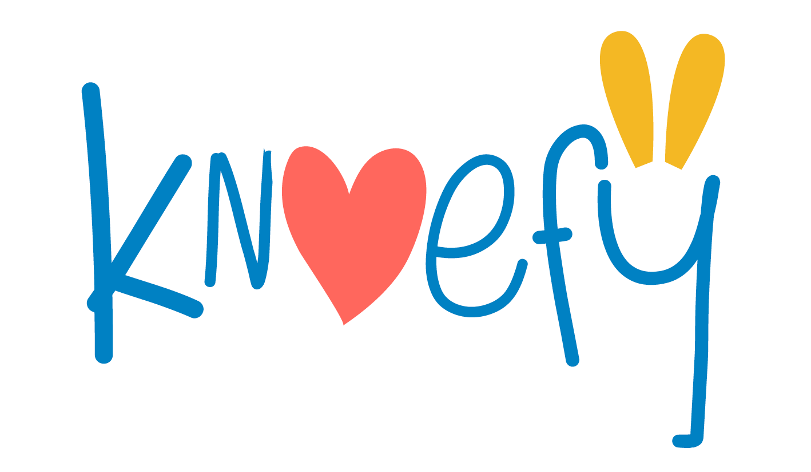
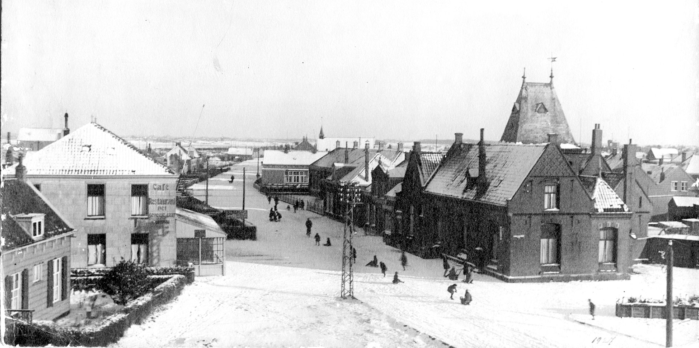
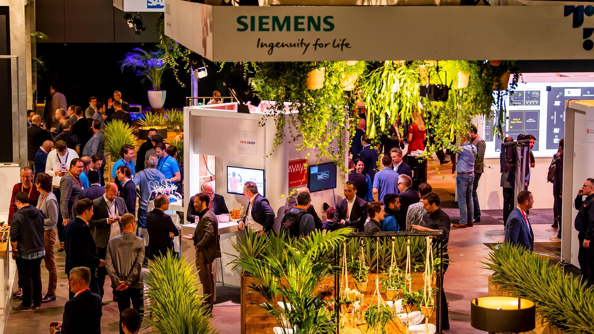

KNOEFY
Wat wil Knoefy
We zouden graag een app aan ons aanbod toe willen voegen
waarin de kinderen spelletjes kunnen spelen en filmpjes kunnen kijken.
We hopen op een mooie samenwerking met studenten die dit kunnen ontwikkelen.
Inschrijving gesloten
We zouden graag een app aan ons aanbod toe willen voegen
waarin de kinderen spelletjes kunnen spelen en filmpjes kunnen kijken.
We hopen op een mooie samenwerking met studenten die dit kunnen ontwikkelen.

Historisch Hoek van Holland
Bezoekers kunnen zoeken op jaartal, onderwerp of gebeurtenis. De auteurs zijn vrijwilligers van het Historisch Genootschap die veel onderzoek doen. De lezers zijn onze donateurs, volgers, de Hoekenezen en iedereeen die zoekt op wereldgebeurtenissen waar Hoek van Holland een rol in had.
Schrijf Je Nu In!

Web Ikonen
Wil jij voor de scholenmarkt Ahoi een tablet interface maken om je
school te promoten?
Dit project vereist teamverband tussen de mede geintereseerden in dit project. het idee is om een verkorte website te maken van de glr website zodat scholieren...
Schrijf Je Nu In!
Dit project vereist teamverband tussen de mede geintereseerden in dit project. het idee is om een verkorte website te maken van de glr website zodat scholieren...
